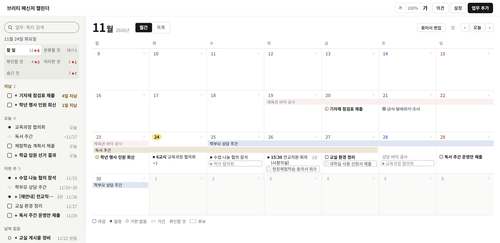
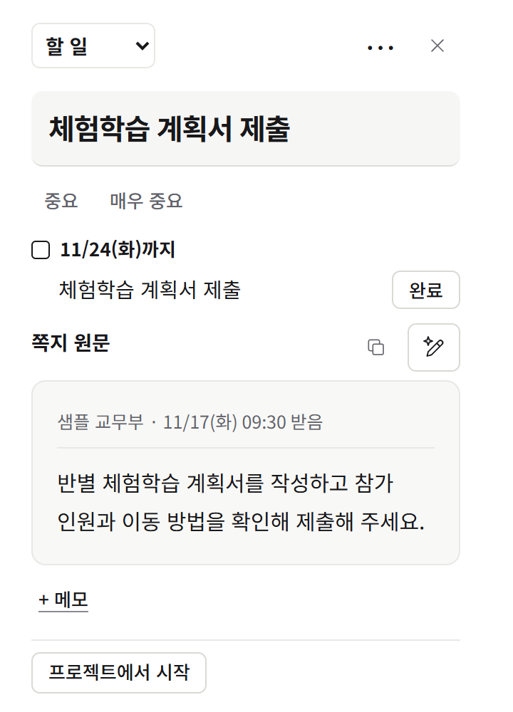
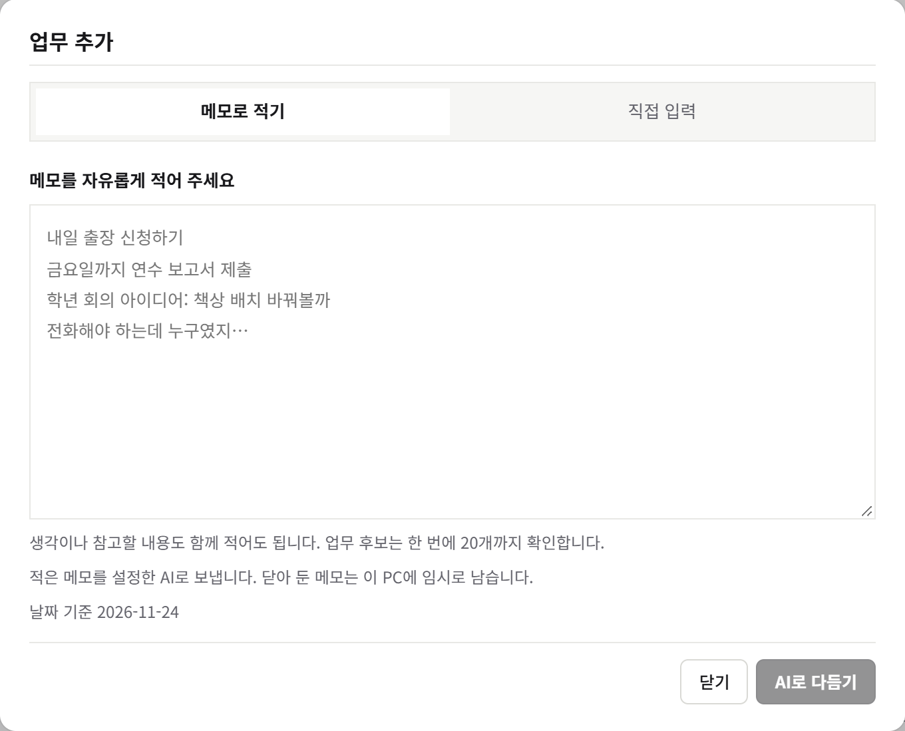
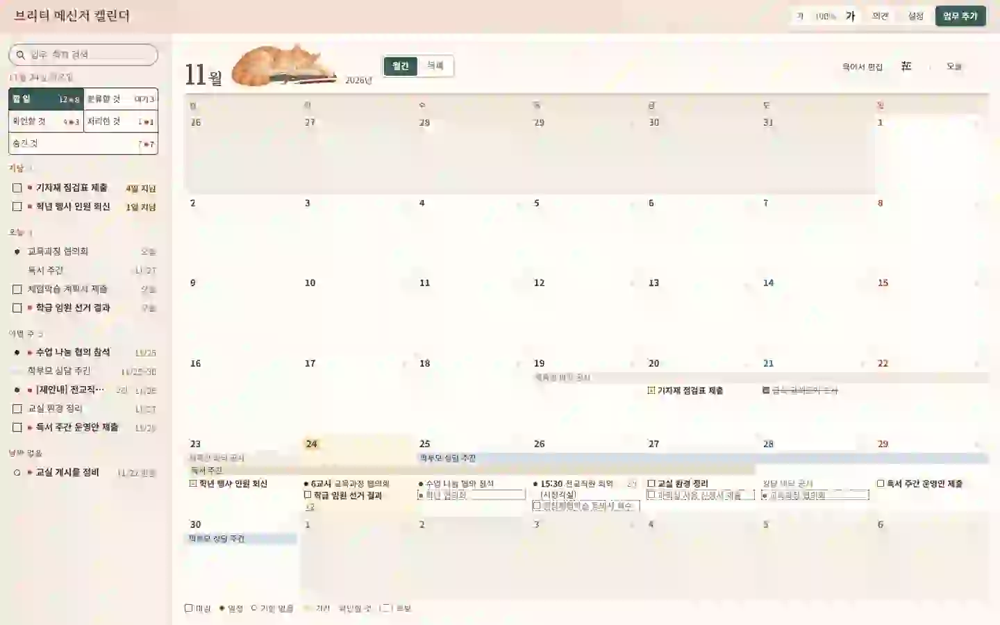
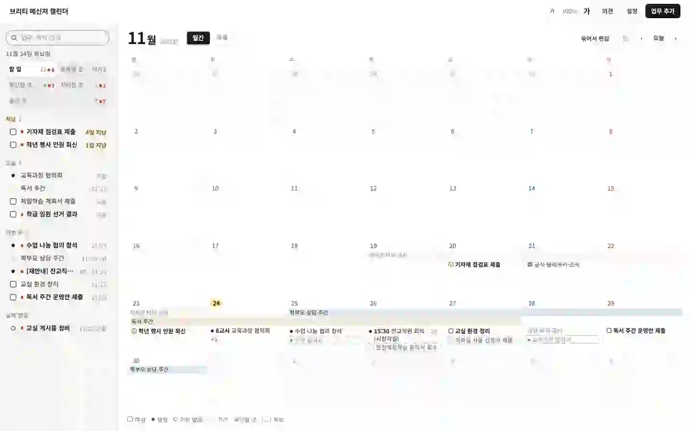

이번 판에서 달라진 것 0.6.5
- 쪽지 자세히에서 AI가 찾은 근거를 원문의 형광펜 표시로 확인하고, 검색 결과 안에서 다음 쪽지로 이동합니다.
- AI 채팅에서 찾은 업무는 AI 박스에서 날짜를 고치고 골라서 한 번에 달력에 넣을 수 있습니다.
- 쪽지의 첨부 요약에서 파일별 요지와 원문 근거를 확인합니다.
- 수업 달력에 시간표를 가져오고 한 주의 과목만 따로 고칠 수 있습니다.
처음 시작
받은 ZIP을 풀어 앱을 열고, AI와 메신저를 차례로 연결하세요.
열기
- 받은 ZIP을 마우스 오른쪽 버튼으로 누르고 모두 압축 풀기를 선택하세요.
- 푼 폴더에서 브리티 메신저 캘린더(GOE판은 GOE 메신저 캘린더)를 두 번 누릅니다.
- Windows의 PC 보호 창이 뜨면 추가 정보를 누른 뒤 실행을 선택하세요.
AI 연결
AI를 먼저 연결하세요. AI 없이 메신저부터 연결하면 쪽지가 날짜 없이 제목 그대로 할 일에 쌓입니다. 위쪽 AI 연결을 누르고 아래에서 하나를 고릅니다.
| 연결 방식 | 이런 분께 |
|---|---|
| 개인 OpenAI API 키 | 처음이라 무엇을 고를지 모르겠다면. 쓴 만큼 OpenAI 계정에 청구됩니다. |
| 개인 Claude API 키 | Anthropic(Claude) 개발자 계정을 쓰고 싶을 때. 쓴 만큼 그 계정에 청구됩니다. |
| Claude Code | 이미 Claude 구독(Pro 이상)을 쓰고 있을 때. 따로 청구되지 않습니다. |
| Codex | 이미 ChatGPT 구독을 쓰고 있을 때. 따로 청구되지 않습니다. |
학교에서 따로 안내한 연결 방식이 있으면 학교 안내를 따르세요.
- 키 방식이면 처음 설정 안내 ↗를 따라 키를 만듭니다.
- 키를 붙여 넣고 연결 시험 및 저장을 누르세요. 연결 시험에는 예시 쪽지를 사용해요.
- 연결 시험을 통과했습니다가 나오면 새 쪽지 자동 분류도 함께 켜져요.
메신저 연결
- 메신저에 로그인하고 창을 띄워 둡니다. 브리티판브리티는 원 뷰로 써 주세요(환경설정 › 일반 › 뷰 모드).
- 캘린더 위쪽 브리티 연결(GOE판은 GOE 메신저 연결)을 누릅니다.
- 지난 쪽지를 불러올 기간을 고르고 불러오기. 끝날 때까지 메신저 창은 그대로 두세요.
화면 읽는 법
오늘 무엇부터 해야 할지 보려면 왼쪽 목록을, 날짜별 일정을 보려면 오른쪽 달력을 확인하세요. 기한이 지난 일은 끝낼 때까지 목록 맨 위에 남아요.

왼쪽의 쪽지 목록
- 할 일해야 하는 일. 빨간 점은 안 읽은 쪽지 수예요.
- 분류할 것AI가 애매하다고 본 쪽지.
- 확인할 것할 일은 아니지만 알아 둘 공지.
- 처리한 것끝냈거나 날짜가 지난 일정.
- 다른 메시지업무로 분류하지 않은 감사나 확인 답장.
달력의 표시
- □ 마감그날까지 끝낼 일. 지나도 끝낼 때까지 남아요.
- ● 일정그날 있는 일이에요. 날짜가 지나면 ‘처리한 것’에 보여요.
- ○ 기한 없음마감 날짜가 없는 일이에요. 완료할 때까지 오늘 칸에 보여요.
- 색 띠여러 날에 걸친 기간(주간 행사 등).
- 점선AI가 찾은 후보. 확인하면 확정돼요.
- 파랑·빨강중요한 업무, 매우 중요한 업무.
쪽지 확인과 답장
목록이나 달력에서 업무를 누르면 오른쪽에 쪽지가 열립니다.

- 쪽지 원문과 첨부를 확인합니다. AI가 정리한 쪽지에서는 마감이나 요청의 근거가 형광펜으로 표시됩니다. 이전에 정리한 쪽지는 다시 다듬기를 누르세요.
- 검색으로 찾은 쪽지를 보고 있다면 다음으로를 눌러 같은 검색 결과 안에서 이동할 수 있습니다.
- 끝냈으면 완료. 남은 할 일을 모두 끝내면 다음 쪽지가 열리고, 방금 한 처리는 되돌릴 수 있습니다.
- 답장하려면 연필 단추를 누르고 전할 말을 적으세요. 다듬기를 누르면 답장 문장이 나와요.
첨부 요약
첨부 이름을 누르면 파일이 열립니다. 첨부 제목 옆의 요약을 누르면 한글(.hwpx), 엑셀(.xlsx), 파워포인트(.pptx), 글을 선택할 수 있는 PDF의 파일별 요지를 볼 수 있습니다. 각 파일의 자세히에서 문서에 적힌 대상·요청·기한과 원문 근거를 확인하세요. 그림과 스캔에 담긴 글은 빠집니다.
저장된 요약은 다시 볼 수 있습니다. 새로 요약할 때는 쪽지 본문과 첨부에서 읽은 글·표가 연결된 AI로 전달됩니다.
일정 고치기와 묶어서 편집
날짜가 틀렸으면 쪽지에서 날짜 고치기로 바꿉니다. 같은 날 마감이 여러 개면 각각 이름과 시간을 따로 저장할 수 있어요. 바쁜 주에는 한꺼번에 고치세요.

- 달력 위 묶어서 편집을 누릅니다.
- 하루 또는 일주일을 고르고 날짜를 정합니다.
- 업무마다 날짜·시간·종류를 고치거나, 여러 개를 골라 선택 완료·확인. 마지막에 저장.
업무 추가
쪽지로 오지 않은 일도 달력에 올릴 수 있습니다. 오른쪽 위 업무 추가를 누르세요.

메모로 적기
생각나는 대로 여러 줄 적고 AI로 다듬기를 누르면 업무 후보로 나눠 줍니다. 후보를 고쳐 필요한 것만 등록하세요. 닫아 둔 메모는 이 PC에 잠시 남습니다.
직접 입력
이름과 날짜를 직접 넣습니다. 날짜 없이 두면 기한 없는 할 일(○)이 되고, 반복을 고르면 매주·격주·매월 일정이 됩니다. 반복 일정은 이번 회차만 완료하거나 다음 회차를 건너뛸 수 있어요.
시간표와 학교 일정
시간표 가져오기
앱 위쪽에서 수업을 고른 뒤 달력 위 시간표 설정을 엽니다. 파일 붙여넣기에 엑셀(.xlsx)·한글(.hwpx) 파일이나 복사한 표를 넣으면 교시 시각과 요일별 과목 중 읽은 내용이 바로 저장됩니다. 그림과 PDF를 읽으려면 AI 연결이 필요합니다.
수업 달력의 날짜 칸을 누르면 해당 주를 크게 볼 수 있습니다. 시간표 고치기에서 파일이나 표를 넣거나 과목 칸을 직접 고치세요. 빈 교시에 마우스를 올리면 +가 나옵니다. +를 눌러 그날만 수업을 넣을 수 있어요. 이 주를 평소 시간표로 되돌리려면 기초 시간표를 누릅니다. 파일이나 표를 잘못 가져왔다면 되돌리기를 누르세요.
수업 메모와 자료
과목 칸을 누르면 그 수업에 메모를 남기고 자료를 연결할 수 있습니다. 그날만 바뀐 과목은 주간 시간표에서 바꿈으로 표시되며, 수업을 누르면 평소 과목을 확인할 수 있습니다. 같은 과목의 바로 지난 수업 자료도 열 수 있어요. 캘린더를 켜 둔 상태에서 같은 드라이브 안의 연결한 수업 자료나 저장된 쪽지 첨부를 옮기거나 이름을 바꿔도 바뀐 위치에서 열립니다.
학사일정과 급식
설정 → 달력 연동의 우리 학교 학사일정·급식에서 학교를 고르면 학사일정과 오늘 급식이 달력에 보입니다. 반복 일정을 만들 때 학교가 쉬는 날을 뺄 수도 있어요.
구글 캘린더
설정 → 달력 연동에서 구글 계정 연결을 누르면 할 일과 알아 둘 일정이 내 구글 캘린더의 학교 할 일, 학교 알림에 표시됩니다. 휴대폰에서도 업무 날짜와 알림을 볼 수 있어요. 연결은 선택이며 언제든 해제할 수 있습니다.
AI에게 맡기기
계획서 초안처럼 손이 많이 가는 일은 Codex나 Claude Code에게 맡길 수 있습니다. 이 PC에 둘 중 하나가 설치돼 있어야 해요.
- 쪽지에서 프로젝트에서 시작을 누릅니다.
- 맡길 AI와 프로젝트, 함께 보낼 첨부를 고르고 요청을 적습니다.
- Codex는 새 채팅에 초안을 엽니다. 첫 메시지를 확인하고 보내세요. Claude Code는 고른 프로젝트에서 작업을 시작합니다.
AI 채팅에서 찾은 업무를 달력에 넣기
설정 → 에이전트에서 MCP 연결 요청 복사를 누르고 Codex나 Claude Code 채팅에 붙여 넣습니다. 채팅에서 브리티 캘린더 또는 GOE 캘린더로 업무를 보내 달라고 요청하세요.
캘린더 위쪽 AI 박스에서 받은 업무의 날짜·시간·조건을 확인합니다. 필요한 업무만 고른 뒤 달력에 넣기를 누르세요. 예전 calendar 연결에서 AI 박스로 보내려면 연결 요청을 다시 복사해 브리티 캘린더 또는 GOE 캘린더 이름으로 연결하세요.
보기와 꾸미기
달력 위에서 월간과 목록을 바꿉니다. 달력 위 보기 설정 단추에서 달력 칸 크기를 업무 많은 주는 넓게로 고르면 일정이 많은 주에 더 넓은 칸을 씁니다. 글씨가 작으면 오른쪽 위의 글자 크기에서 원하는 숫자를 고르세요.
설정 → 화면·알림의 화면 꾸미기에서 열세 가지 꾸미기와 글꼴을 고를 수 있어요.




업데이트와 옮기기
새 판 받기
새 판이 나오면 앱이 알려 줍니다. 업데이트를 누르면 자료는 그대로 둔 채 새 판으로 다시 열려요. 달라진 점은 그때 창으로 보여 줍니다.
다른 PC로 옮기기
설정 → 백업·정보에서 백업 만들기를 누르고, 새 PC의 캘린더에서 백업에서 되돌리기로 불러오면 업무와 쪽지가 그대로 옮겨집니다.
더 막히면
앱의 의견 단추로 알려 주세요. 자주 묻는 것은 도움말에 있어요.